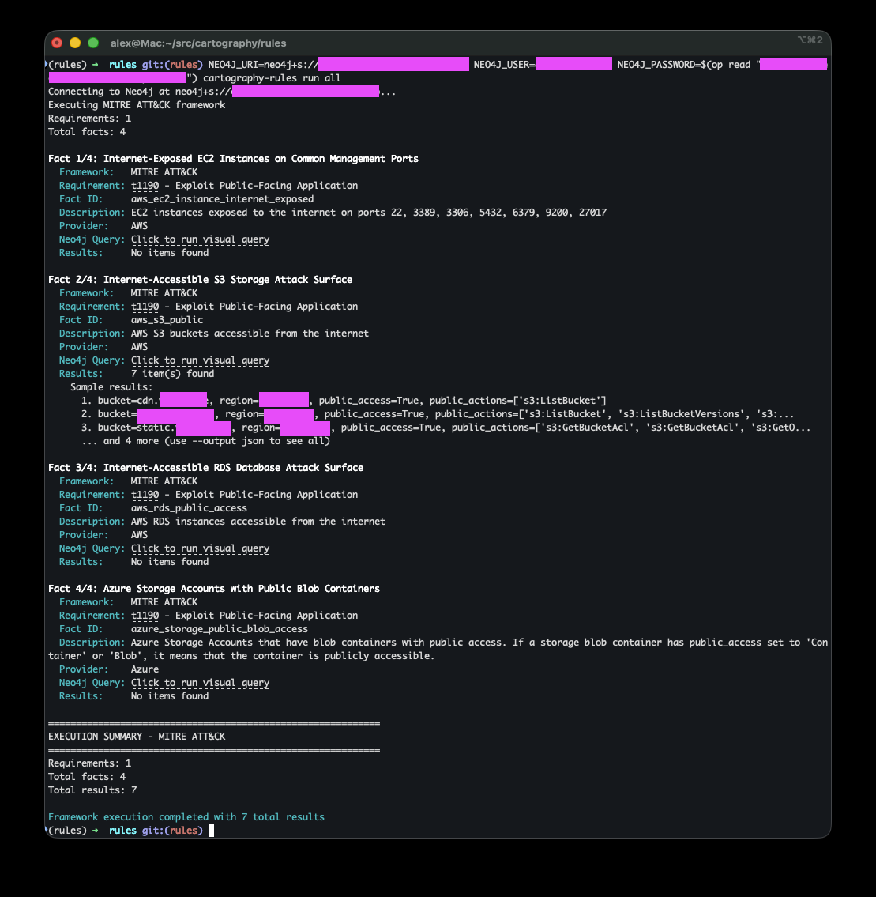
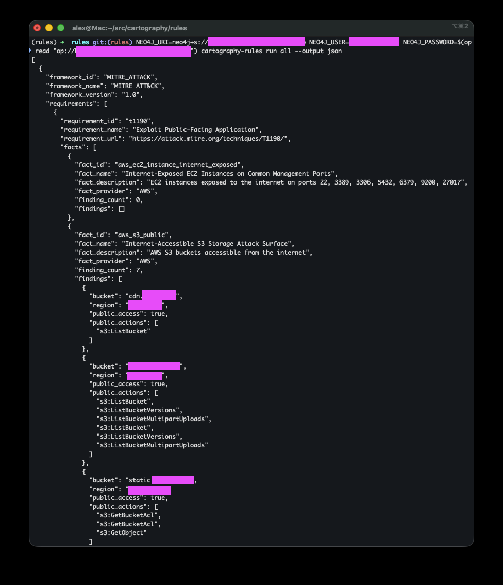

Cartography Rules¶
Cartography Rules is a security query library for your Cartography graph.
With the cartography-rules CLI, you can:
Run pre-defined security queries across your infrastructure
Identify potential attack surfaces and security gaps
Explore and contribute community rules
Build custom queries for your own environment
Architecture¶
The rules system uses a simple two-level hierarchy:
Rule (e.g., mfa-missing, object_storage_public)
└─ Fact (e.g., aws_s3_public, missing-mfa-cloudflare)
Rules represent security issues or attack surfaces you want to detect (e.g., “Public Object Storage exposed on internet”).
Facts are individual Cypher queries that gather evidence about your environment across different cloud providers and services.
This flat structure makes it easy to understand, maintain, and extend the rules library.
Design Philosophy¶
These rules are designed from an attacker’s perspective. We ask: “What does an attacker actually need to exploit this weakness or gain access?”
The queries surface opportunities across the entire attack lifecycle: initial access, lateral movement, privilege escalation, data exfiltration, and persistence.
We don’t impose arbitrary thresholds like “no more than 5 admins” because every organization has different risk tolerances. Instead, we surface facts:
If a query returns no findings, you’ve eliminated obvious attack paths
If it returns findings, you now have a clear list of potential attacker targets and security gaps
Rationale¶
Security isn’t one-size-fits-all. For example:
An EC2 security group open to the internet may be risky for some orgs even if it isn’t attached to an instance (someone could attach one later). For other orgs, that’s irrelevant noise.
IAM roles trusted across multiple accounts or S3 buckets with public access may or may not be material risks depending on your use case.
User accounts without MFA might be acceptable in development environments but critical in production.
Our goal is to surface facts in context so you can decide what matters for your environment.
Available Rules¶
Current rules include:
mfa-missing - User accounts missing multi-factor authentication
object_storage_public - Publicly accessible object storage (S3, Azure Storage)
compute_instance_exposed - Internet-exposed compute instances
database_instance_exposed - Publicly accessible databases
delegation_boundary_modifiable - Identity delegation surface
identity_administration_privileges - IAM administration privileges
policy_administration_privileges - Policy administration capabilities
unmanaged_accounts - Unmanaged cloud accounts
workload_identity_admin_capabilities - Workload identity escalation surface
You can list all available rules and their details from the CLI, see below.
Note
Rules query against the existing Cartography graph. They don’t write data; they return results you can view in text, JSON, or the Neo4j Browser.
Rules Lifecycle¶
Rule Versioning¶
Each rule has a semantic version number (e.g., 0.1.0, 1.0.0) that helps track changes over time:
Major version (X.0.0): Breaking changes - query structure significantly altered, findings format changed
Minor version (0.X.0): Additive changes - new facts added, expanded coverage to additional providers
Patch version (0.0.X): Bug fixes - query improvements, description updates
Example lifecycle:
0.1.0 → Initial release with AWS support
0.2.0 → Added Azure and GCP facts
0.2.1 → Fixed query performance issue
1.0.0 → Promoted to stable, all facts tested in production
When a rule’s version changes, you can review the changes in the git history to understand what was modified and assess impact on your existing workflows.
Fact Maturity Levels¶
Each fact has a maturity level that indicates its stability and production-readiness:
EXPERIMENTAL¶
Use case: New facts, recently added, or covering new security patterns
Stability: May have bugs, query performance not optimized, output format may change
Testing: Limited production testing
What to expect:
False positives/negatives possible
Query might be slow on large graphs
Results format may evolve
When to use: Early adopters, testing new detection capabilities, non-critical analysis
Example:
_new_attack_surface = Fact(
id="aws_new_vulnerability_check",
name="New AWS Vulnerability Pattern",
description="Recently discovered attack pattern",
cypher_query="...",
cypher_visual_query="...",
cypher_count_query="...",
module=Module.AWS,
maturity=Maturity.EXPERIMENTAL, # New, needs testing
)
STABLE¶
Use case: Production-ready facts with proven accuracy
Stability: Well-tested, optimized queries, consistent results
Testing: Extensively tested across multiple environments
What to expect:
Reliable results with minimal false positives
Good query performance
Stable output format
When to use: Production security monitoring, compliance reporting, automated alerting
Example:
_proven_check = Fact(
id="aws_s3_public",
name="Internet-Accessible S3 Storage Attack Surface",
description="AWS S3 buckets accessible from the internet",
cypher_query="...",
cypher_visual_query="...",
cypher_count_query="...",
module=Module.AWS,
maturity=Maturity.STABLE, # Battle-tested in production
)
Filtering by Maturity¶
You can exclude experimental facts from your analysis:
# Only run stable facts
cartography-rules run object_storage_public --no-experimental
# Run all (including experimental) - default behavior
cartography-rules run object_storage_public
Typical Fact Lifecycle¶
Initial Development (
EXPERIMENTAL)New fact created to detect a security issue
Basic testing in development environment
Community feedback gathered
Refinement (
EXPERIMENTAL)Query optimization based on performance testing
False positive reduction
Documentation improvements
Tested across diverse environments
Promotion (
STABLE)Proven accuracy across multiple production deployments
Query performance optimized
Output format finalized
Comprehensive test coverage
Maintenance (
STABLE)Bug fixes as needed
Query updates to handle new Cartography schema changes
Description clarifications
Version and Maturity Together¶
Rules evolve over time. Here’s how versioning and maturity work together:
# Version 0.1.0 - Initial release
object_storage_public = Rule(
id="object_storage_public",
name="Public Object Storage Attack Surface",
description="Publicly accessible object storage services such as AWS S3 buckets and Azure Storage Blob Containers",
tags=("infrastructure", "attack_surface"),
output_model=ObjectStoragePublic,
facts=(
_aws_s3_public, # EXPERIMENTAL - new query
),
version="0.1.0",
)
# Version 0.2.0 - Added Azure support
object_storage_public = Rule(
id="object_storage_public",
name="Public Object Storage Attack Surface",
description="Publicly accessible object storage services such as AWS S3 buckets and Azure Storage Blob Containers",
tags=("infrastructure", "attack_surface"),
output_model=ObjectStoragePublic,
facts=(
_aws_s3_public, # EXPERIMENTAL
_azure_storage_public, # EXPERIMENTAL - newly added
),
version="0.2.0",
)
# Version 0.2.1 - Bug fix
# AWS query fixed, no version bump for facts themselves
# Version 1.0.0 - Production ready
object_storage_public = Rule(
id="object_storage_public",
name="Public Object Storage Attack Surface",
description="Publicly accessible object storage services such as AWS S3 buckets and Azure Storage Blob Containers",
tags=("infrastructure", "attack_surface"),
output_model=ObjectStoragePublic,
facts=(
_aws_s3_public, # STABLE - promoted after extensive testing
_azure_storage_public, # STABLE - promoted after extensive testing
),
version="1.0.0",
)
Setup¶
Make sure you’ve run Cartography and have data in Neo4j.
Then configure your Neo4j connection:
export NEO4J_URI=bolt://localhost:7687 # or your Neo4j URI
export NEO4J_USER=neo4j # or your username
export NEO4J_DATABASE=neo4j # or your database name
# Store the Neo4j password in an environment variable. You can name this anything you want.
set +o history # avoid storing the password in the shell history; can also use something like 1password CLI.
export NEO4J_PASSWORD=password
set -o history # turn shell history back on
Quick start¶
List all available rules
cartography-rules listView details of a specific rule
cartography-rules list object_storage_publicRun a specific rule
cartography-rules run object_storage_publicSample output:
Executing object_storage_public rule Total facts: 2 Fact 1/2: Internet-Accessible S3 Storage Attack Surface Rule: object_storage_public - Public Object Storage Attack Surface Fact ID: aws_s3_public Description: AWS S3 buckets accessible from the internet Provider: AWS Neo4j Query: http://localhost:7474/browser/?cmd=play&arg=<encoded-query> Results: 3 item(s) found Sample findings: 1. bucket=cdn.example.com, region=us-east-1, anonymous_access=True 2. bucket=mybucket.example.com, region=us-east-1, anonymous_actions=['s3:ListBucket', 's3:ListBucketVersions'] 3. bucket=static.example.com, region=us-east-1, public_access=True ... (use --output json to see all) Fact 2/2: Azure Storage Public Blob Access Rule: object_storage_public - Public Object Storage Attack Surface Fact ID: azure_storage_public_blob_access Description: Azure Storage accounts with public blob access Provider: Azure Neo4j Query: http://localhost:7474/browser/?cmd=play&arg=<encoded-query> Results: No items found ============================================================ EXECUTION SUMMARY ============================================================ Total facts: 2 Total findings: 3 Rule execution completed with 3 total findings
Usage¶
list¶
See all available rules¶
cartography-rules list
Output shows all rules with their IDs, names, and fact counts:
Available rules:
- compute_instance_exposed (3 facts)
- database_instance_exposed (2 facts)
- mfa-missing (1 fact)
- object_storage_public (2 facts)
...
See details of a specific rule¶
cartography-rules list mfa-missing
Output shows rule metadata and all associated facts:
Rule: mfa-missing
Name: User accounts missing MFA
Description: Detects user accounts without multi-factor authentication
Facts: 1
Version: 0.1.0
Facts:
1. missing-mfa-cloudflare (Cloudflare)
Finds Cloudflare member accounts that have MFA disabled
Maturity: STABLE
See details of a specific fact¶
cartography-rules list mfa-missing missing-mfa-cloudflare
run¶
Run all rules in text mode¶
cartography-rules run all
# or
cartography-rules run all --output text

Run all rules in JSON mode¶
cartography-rules run all --output json

Run a specific rule¶
cartography-rules run mfa-missing
Run a specific fact within a rule¶
cartography-rules run object_storage_public aws_s3_public
Exclude experimental facts¶
cartography-rules run object_storage_public --no-experimental
Authentication Options¶
Use a custom environment variable for the password:¶
cartography-rules run mfa-missing --neo4j-password-env-var MY_NEO4J_PASSWORD
Use interactive password prompt:¶
cartography-rules run mfa-missing --neo4j-password-prompt
Tab completion¶
Note that you can TAB complete. Install it with
cartography-rules --install-completion
and then restart your shell and then you can get TAB completion like:
cartography-rules list <TAB>
cartography-rules run <TAB>
This will show you all available rules and facts.
Contributing New Rules¶
Want to add your own security rules? Here’s how:
Query Structure: cypher_query, cypher_visual_query, and cypher_count_query¶
Each Fact requires three distinct Cypher queries:
cypher_query - Data Query¶
Returns specific fields used to populate the output model. This query should:
Use explicit field selection with aliases (e.g.,
RETURN n.id AS id, n.name AS name)Return only the data fields needed for the rule’s output model
Be optimized for data extraction and processing
Example:
MATCH (m:CloudflareMember)
WHERE m.two_factor_authentication_enabled = false
RETURN m.id AS id, m.email AS email, m.firstname AS firstname
cypher_visual_query - Visualization Query¶
Returns nodes and relationships for Neo4j Browser visualization. This query should:
Use
RETURN *or explicit node/relationship returns (e.g.,RETURN morRETURN *)Include relevant relationships and context for visual exploration
Help users understand the graph structure and connections
Example:
MATCH (m:CloudflareMember)
WHERE m.two_factor_authentication_enabled = false
RETURN m
Or with relationships:
MATCH (b:S3Bucket)
WHERE b.anonymous_access = true
WITH b
OPTIONAL MATCH p=(b)-[:POLICY_STATEMENT]->(:S3PolicyStatement)
RETURN *
cypher_count_query - Total Asset Count Query¶
Returns the total count of assets of the type being evaluated by the Fact. This query should:
Count all assets of the relevant type, regardless of whether they match the Fact criteria
Return a single value with
RETURN COUNT(...) AS countEnable calculation of compliance ratios (e.g., “10 public buckets out of 100 total”)
Example:
MATCH (m:CloudflareMember)
RETURN COUNT(m) AS count
Or for S3 buckets:
MATCH (b:S3Bucket)
RETURN COUNT(b) AS count
This count query allows users to understand the scope of their environment and calculate what percentage of assets are affected by a security finding.
General Query Guidelines¶
Ensure your queries are efficient and optimized for performance on large graphs.
Test your queries against realistic datasets to minimize false positives/negatives.
Follow existing code style and conventions for consistency.
Output Models with Pydantic¶
Each Rule must define an output model that extends Finding. This Pydantic model defines the structure of the data returned by the rule’s facts.
Creating an Output Model¶
from cartography.rules.spec.model import Finding
class MyRuleOutput(Finding):
"""Output model for my custom rule."""
# Define the fields that will be populated from cypher_query results
id: str | None = None # Resource identifier
name: str | None = None # Resource name
email: str | None = None # User email (if applicable)
region: str | None = None # Cloud region
public_access: bool | None = None # Access level
# Add any other fields relevant to your rule
Key Points¶
Inherit from
Finding: Your model must extend the baseFindingclassUse Optional Fields: All fields should be optional (
| None = None) as different facts may return different subsets of dataMatch Query Aliases: Field names should match the aliases used in your
cypher_query(e.g., if query returnsn.id AS id, model should haveidfield)Automatic Handling:
The
sourcefield is automatically populated with the module name (e.g., “AWS”, “Azure”)Fields not defined in the model are stored in the
extradictionaryNumber values are automatically coerced to strings
Lists, tuples, and sets are joined into comma-separated strings
Dictionaries are serialized to JSON strings
Example from object_storage_public¶
class ObjectStoragePublic(Finding):
name: str | None = None
id: str | None = None
region: str | None = None
public_access: bool | None = None
account: str | None = None # For Azure storage accounts
object_storage_public = Rule(
id="object_storage_public",
name="Public Object Storage Attack Surface",
description="Publicly accessible object storage services",
output_model=ObjectStoragePublic, # Reference the output model class
facts=(...),
tags=("infrastructure", "attack_surface"),
version="0.1.0",
)
Steps to add a new rule¶
Create a new rule file in
cartography/rules/data/rules/:from cartography.rules.spec.model import Fact, Rule, Finding, Maturity, Module # Define facts with data, visualization, and count queries _my_aws_check = Fact( id="my_aws_security_check", name="My AWS Security Check", description="What this checks for", cypher_query=""" MATCH (n:SomeNode) WHERE <condition> RETURN n.id AS id, n.name AS name, n.region AS region """, cypher_visual_query=""" MATCH (n:SomeNode) WHERE <condition> RETURN n """, cypher_count_query=""" MATCH (n:SomeNode) RETURN COUNT(n) AS count """, module=Module.AWS, maturity=Maturity.EXPERIMENTAL, ) _my_azure_check = Fact( id="my_azure_security_check", name="My Azure Security Check", description="What this checks for in Azure", cypher_query=""" MATCH (n:SomeAzureNode) WHERE <condition> RETURN n.id AS id, n.name AS name, n.location AS region """, cypher_visual_query=""" MATCH (n:SomeAzureNode) WHERE <condition> RETURN n """, cypher_count_query=""" MATCH (n:SomeAzureNode) RETURN COUNT(n) AS count """, module=Module.AZURE, maturity=Maturity.EXPERIMENTAL, ) # Define output model class MyRuleOutput(Finding): """Output model for my custom rule.""" id: str | None = None name: str | None = None region: str | None = None # Define rule my_rule = Rule( id="my-finding", name="My Security Rule", description="Detects a security issue", output_model=MyRuleOutput, facts=(_my_aws_check, _my_azure_check), tags=("category",), version="0.1.0", )
Register your rule in
cartography/rules/data/rules/__init__.py:from cartography.rules.data.rules.my_rule import my_rule RULES = { # ... existing rules my_rule.id: my_rule, }
Test it:
cartography-rules list my-rule cartography-rules run my-rule
Submit a PR - PRs welcome! ❤️
Next steps¶
Explore the findings against your graph
Create custom findings for your environment-specific risks
Use JSON output (
--output json) to integrate with your existing security toolsContribute your findings back to the community via pull requests